Vtree2 User Guide
vtree2.RmdQuick start
library(vtree2)
# example data set - same as Titanic, but with NAs
data(titanicNA)
# variables to show: Class and Survived
vt <- vtree(titanicNA, Class, Survived)
plot(vt, legend = TRUE)
plot(vt, layout = "proportional")
For more information what the vtrees are and how to use them, see the What are Vtrees? vignette. Read on for the full user manual.
Vtree2 Manual
Building vtree objects
Case data
Vtrees are primarly built from case data: matrices or data
frames in which each row corresponds to a single sample. Each column is
a data variable and can be selected to be used and displayed on a vtree.
For example, consider the built-in data set titanicNA. This
is the same data set as Titanic from the
datasets package, except that it is a cases data frame and
some of the values were replaced by NAs to simulate missing data:
data(titanicNA)
head(titanicNA)
#> # A tibble: 6 × 4
#> Class Sex Age Survived
#> <chr> <chr> <chr> <chr>
#> 1 3rd Male Child No
#> 2 3rd Male Child No
#> 3 3rd NA Child No
#> 4 3rd Male Child No
#> 5 3rd Male Child No
#> 6 NA NA Child NoAs you can see, we have four variables: Class,
Sex, Age and Survived. Each of
the 2201 rows corresponds to a single passenger.
The vtree() function then collects the levels of each
selected variable and counts the number of samples for each combination
of levels:
vt <- vtree(titanicNA, Class, Survived)
vt
#> vtree object with 2 variables and 2201 observations
#> Variables: Class, Survived
#> Overview:
#> # Tibble (class tbl_df) 6 x 16:
#> │path │n │freq │tot_n│missing│denom
#> 1│root │ 2201│ 1.00│ 2201│ NA│ 2201
#> 2│Class:1st │ 294│ 0.15│ 2201│ 223│ 1978
#> 3│Class:2nd │ 258│ 0.13│ 2201│ 223│ 1978
#> 4│Class:3rd │ 633│ 0.32│ 2201│ 223│ 1978
#> 5│Class:Crew │ 793│ 0.40│ 2201│ 223│ 1978
#> 6│Class:NA │ 223│ 0.11│ 2201│ 223│ 1978
#> 7│Class:1st/Survived:No │ 114│ 0.39│ 294│ 0│ 294
#> 8│Class:1st/Survived:Yes │ 180│ 0.61│ 294│ 0│ 294
#> 9│Class:2nd/Survived:No │ 151│ 0.59│ 258│ 0│ 258
#> 10│Class:2nd/Survived:Yes │ 107│ 0.41│ 258│ 0│ 258
#> 11│Class:3rd/Survived:No │ 475│ 0.75│ 633│ 0│ 633
#> 12│Class:3rd/Survived:Yes │ 158│ 0.25│ 633│ 0│ 633
#> 13│Class:Crew/Survived:No │ 601│ 0.76│ 793│ 0│ 793
#> 14│Class:Crew/Survived:Yes│ 192│ 0.24│ 793│ 0│ 793
#> 15│Class:NA/Survived:No │ 149│ 0.67│ 223│ 0│ 223
#> 16│Class:NA/Survived:Yes │ 74│ 0.33│ 223│ 0│ 223Note that you select the variables that you want to consider in your
vtree - in the above example, we do not care about Sex or Age. Also note
that the variables follow the tidyverse logic - they are data
vars, and do not need to be quoted. If you need to use a variable
name that is stored in another variable, or if the variable names are
not valid R identifiers, you can use tidyselect::all_of()
to select the variables.
That is one way to construct vtrees. The other is to use frequency tables.
Frequency data
Often the data is already summarized in a frequency table, where each row corresponds to a combination of levels of the selected variables, and there is a column with the number of samples in which this combination occurs.
There are two functions to construct vtrees from frequency tables:
vtree_from_freqtable() and
cases_from_freqtable(). The first one constructs the vtree
directly from the frequency table, while the second one first expands
the frequency table into a cases data frame which you can use to
construct the vtree with vtree().
The original Titanic data set is a cross-tabulation of the four
variables. When converted to a data frame, it becomes a frequency table,
with the column Freq containing the number of passengers
for each combination of levels of the four variables:
head(as.data.frame(Titanic))
#> Class Sex Age Survived Freq
#> 1 1st Male Child No 0
#> 2 2nd Male Child No 0
#> 3 3rd Male Child No 35
#> 4 Crew Male Child No 0
#> 5 1st Female Child No 0
#> 6 2nd Female Child No 0
cases <- cases_from_freqtable(Titanic)
vt <- vtree(cases, Class, Survived)
# or do it directly:
vt <- vtree_from_freqtable(Titanic, Class, Survived)Valid percentages
One of the important concepts to know about are the valid percentages. In short, a valid percentage is the number of samples with a given value of a variable divided by the total number of samples for which this variable is not missing.
If you have 50 males, 50 females and 100 samples for which the sex is unknown, then the number of males divided by the total number of samples may be misleading (25%); valid percentages are calculated only from the 100 samples for which the sex is known and the proportion of males and females is 50% each.
The vtree() and vtree_from_freqtable()
functions by default calculate valid percentages; if you want to
calculate the absoluet frequencies, use the
.vp=FALSEargument to these functions.
Once the vtree has been constructed, this cannot change. Any operations downstream (like selecting and pruning nodes and modifying their labels) will not change the calculated percentages.
Vtree objects
You can inspect the vtree object with a number of methods.
# names of the column variables associated with the nodes
names(vt)
#> [1] "Class" "Survived"
# available levels of the different column variables:
levels(vt)
#> $Class
#> [1] "1st" "2nd" "3rd" "Crew"
#>
#> $Survived
#> [1] "No" "Yes"
# summary frequency data for each node variable
summary(vt)
#> # A tibble: 8 × 6
#> node_col node_val count freq denom label
#> <chr> <chr> <int> <dbl> <int> <chr>
#> 1 Class 1st 325 0.148 2201 1st: 325 (15%)
#> 2 Class 2nd 285 0.129 2201 2nd: 285 (13%)
#> 3 Class 3rd 706 0.321 2201 3rd: 706 (32%)
#> 4 Class Crew 885 0.402 2201 Crew: 885 (40%)
#> 5 Class NA 0 0 2201 Missing: 0
#> 6 Survived No 1490 0.677 2201 No: 1490 (68%)
#> 7 Survived Yes 711 0.323 2201 Yes: 711 (32%)
#> 8 Survived NA 0 0 2201 Missing: 0
# check whether the vtree is calculated using valid
# percentages or absolute frequencies
is_vp(vt)
#> [1] TRUEThe vtree objects contain a data frame of nodes with a number of associated columns, which include:
-
node_key- a unique identifier for each node -
node_id- a unique integer identifier for each node -
node_col- the name of the column variable associated with the node -
node_val- the value of the variable associated with the node -
freq- the percentage of samples within the node that have the givennode_val -
n- the number of samples in the current node -
missing- the number of missing samples in the current node -
tot_n- the number of samples in the parent node -
denom- the number of samples within the node that have a non-missing value for the variable associated with the node. This is equal totot_nonly if the tree was not constructed with valid percentages. Otherwise, it is equal to the number of samples in the parent node that have a non-missing value for variablenode_col.
Some other columns may be added later with mutate() or
with the various add_*() functions, for example:
-
label- the label to be displayed on the node -
fill- the fill color of the node -
color- the text color of the label -
x,y,width,height- layout information for the node
You can inspect the columns of the vtree object with
nodecols(), which is just a wrapper around
colnames(as_tibble(vt)):
nodecols(vt)
#> [1] "path" "node_id" "node_key" "parent" "parent_id" "path_l"
#> [7] "level" "node_col" "node_val" "n" "tot_n" "missing"
#> [13] "freq" "denom" "vp" "leaf"You can convert the vtree object to a data frame with
as_tibble:
as_tibble(vt)
#> # A tibble: 13 × 16
#> path node_id node_key parent parent_id path_l level node_col node_val
#> <chr> <int> <chr> <chr> <int> <list> <dbl> <chr> <chr>
#> 1 root 1 node_1 NA NA <lgl [1]> 0 root ""
#> 2 Class… 2 node_2 root 1 <named list> 1 Class "1st"
#> 3 Class… 3 node_3 root 1 <named list> 1 Class "2nd"
#> 4 Class… 4 node_4 root 1 <named list> 1 Class "3rd"
#> 5 Class… 5 node_5 root 1 <named list> 1 Class "Crew"
#> 6 Class… 6 node_6 Class… 2 <named list> 2 Survived "No"
#> 7 Class… 7 node_7 Class… 2 <named list> 2 Survived "Yes"
#> 8 Class… 8 node_8 Class… 3 <named list> 2 Survived "No"
#> 9 Class… 9 node_9 Class… 3 <named list> 2 Survived "Yes"
#> 10 Class… 10 node_10 Class… 4 <named list> 2 Survived "No"
#> 11 Class… 11 node_11 Class… 4 <named list> 2 Survived "Yes"
#> 12 Class… 12 node_12 Class… 5 <named list> 2 Survived "No"
#> 13 Class… 13 node_13 Class… 5 <named list> 2 Survived "Yes"
#> # ℹ 7 more variables: n <int>, tot_n <int>, missing <int>, freq <dbl>,
#> # denom <int>, vp <lgl>, leaf <lgl>Vtree objects as graphs
The vtree class is a wrapper around the
tbl_graph class from package tidygraph. It is
a directed graph, where each node corresponds to a combination of levels
of the selected variables. The tbl_graph class itself
inherits from igraph, which means that you can use all of
the igraph functions on vtree objects:
igraph::degree(vt)
#> [1] 4 3 3 3 3 1 1 1 1 1 1 1 1Since the default plotting function for igraph objects
is replaced by vtree2’s own plot.vtree(), if
you want to use igraph’s plotting function, you need to
convert the vtree object to a tbl_graph object first:
vt_tbl <- as_tbl_graph(vt)
plot(vt_tbl)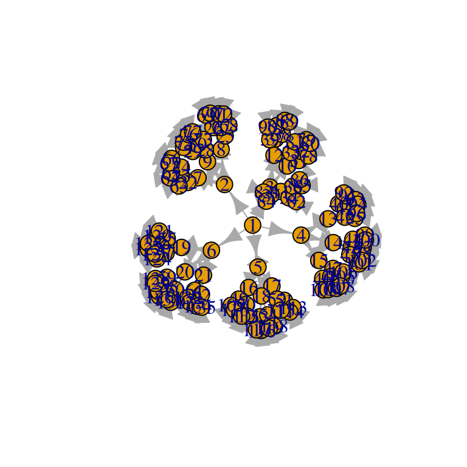
Creating layouts
Layouts will be automatically created by plot() if they
are missing. The parameters passed to the plot give some basic control
over the layout: dir determines the direction of the tree,
show_root determines whether the root node is shown, and
lwidth/lheight determine the width and height
of the nodes relative to the available space.
vt <- vtree_from_freqtable(Titanic, Class, Survived)
p1 <- plot(vt)
p2 <- plot(vt, dir = "tb", show_root = FALSE, lwidth = 0.8, lheight = 0.3)
plot_grid(p1, p2, nrow = 1)The plot() function simply calls
add_layout() to add the layout to the vtree object with the
specified parameters. Alternatively, you can call the function
add_layout() directly on the vtree object. The resulting
vtree contains the additional columns x, y,
width and height for the nodes and
x1, y1, x2, y2 for
the edges. You can then modify these columns directly.
In the following example we will modify a layout with pruned nodes. We will move the nodes on the right (leafs) hand up a bit upwards.
vt <- vtree_from_freqtable(Titanic, Class, Survived) |>
prune(Class %in% c("1st", "2nd"), follow_only = TRUE) |>
add_layout() |>
mutate(y = ifelse(leaf, y + height/2, y))
# we need to modify the edges as well, but for that we need information
# from the nodes
nodes <- as_tibble(vt)
vt <- mutate(vt, x1 = nodes$x[from], y1 = nodes$y[from],
x2 = nodes$x[to] - nodes$width[to]/2, y2 = nodes$y[to],
.edges = TRUE)
plot(vt)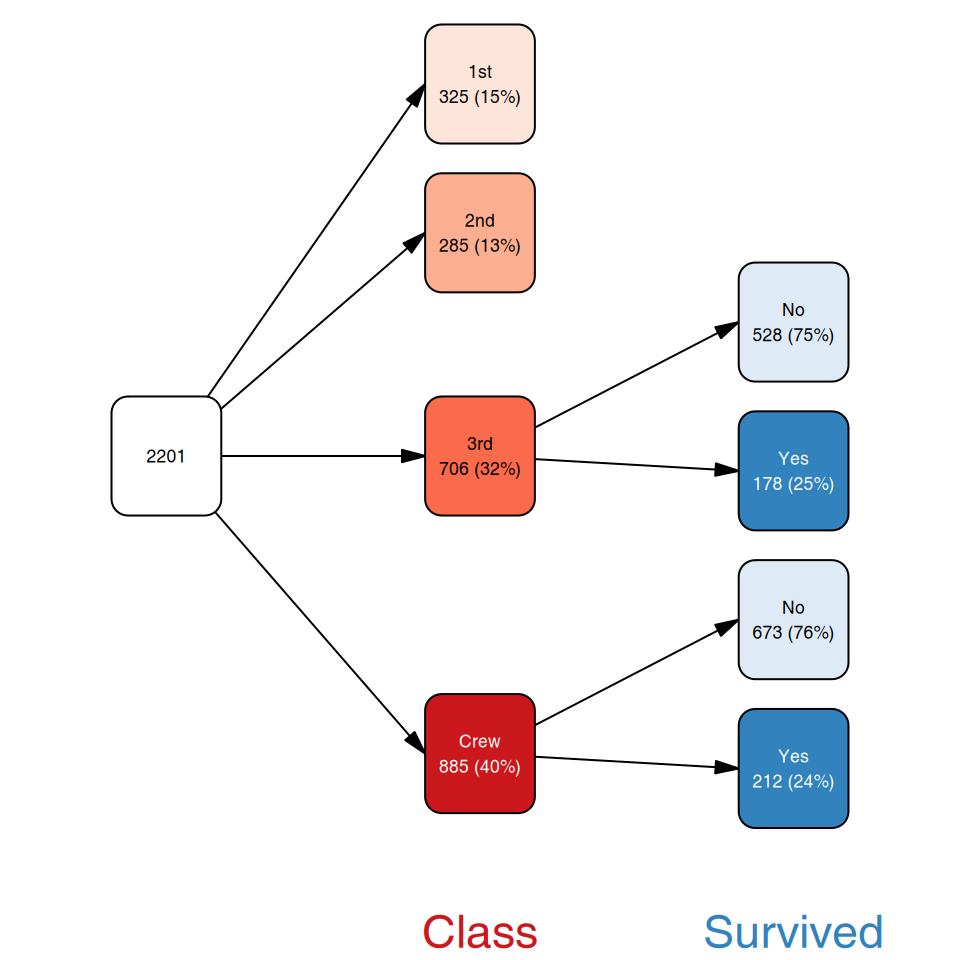
Note how we mutate the edges with the .edge = TRUE
argument. This is different from tidygraph, where the
object (tree) can either be in activated “node” or “edge” mode. In
vtree2, the object is always in “node” mode (because it is
more practical), but on the rare occassion that you need to access the
edges, you can.
The add_layout() function has additional parameters:
varspace and varsize. These can assign the
amount of relative space available to the node depending on the variable
it is associated with. For example, we might want to show a long summary
which takes a lot of space for the leafs, but only short labels for the
internal nodes. You can tune the relative node sizes with these two
parameters.
cases <- cases_from_freqtable(Titanic)
sm <- summary_vt(cases, vt, Age)
vt <- vtree(cases, Class, Sex, Survived) |>
prune(Class == "Crew") |>
add_labels() |>
mutate(label = ifelse(leaf, paste0(label, "\n", sm), label)) |>
add_layout(dir="tb", lheight=.8,
varspace=c(root=1, Class=1,Sex=1,Survived=4))
# legend_tiny: not even column names on the margin
plot(vt, legend_tiny = FALSE)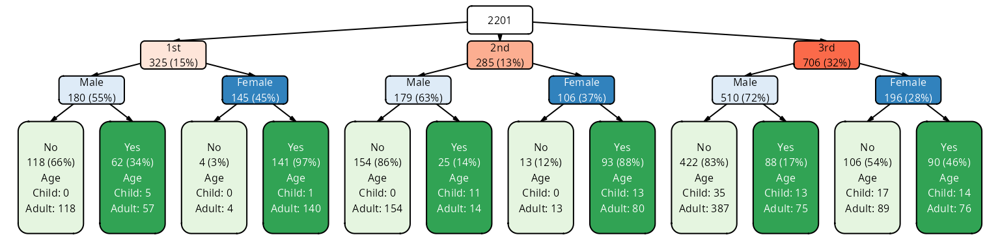
Note that both varspace and varsize
describe the node sizes along the axis of the plot. That is, for
horizontal layouts, they control the width of the nodes; for vertical
layouts, they control the height of the nodes.
Adding column and value aliases
If you prefer to see a different name for the variable or its values on the plot, there are basically two approaches.
First, you can just recode or rename the variables in the data from which you build the vtree. This has an advantage: you ensure that the labels you see on the plot are the same as in the original data. For example, you can do the following:
cases <- as_tibble(Titanic) |>
mutate(Class = recode(Class, "1st" = "First", "2nd" = "Second",
"3rd" = "Third")) |>
cases_from_freqtable(.freq_col = "n")
vtree(cases, Class, Survived) |> plot()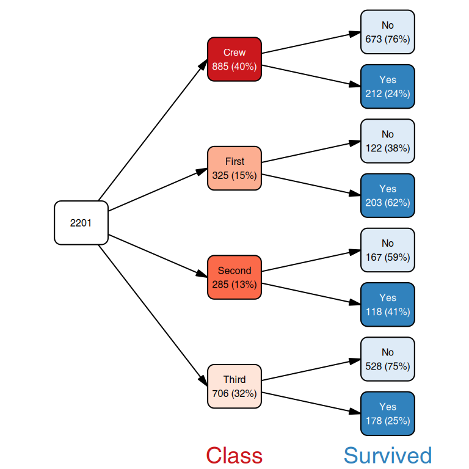
However, some times what you want to see on the plot is not
convenient to work with in the data, for example if you want to show a
longer description of the possible values, add Unicode characters or
markdown / HTML formatting for rich text labels. In this case, you can
specify an alias for either using the col_alias and
val_alias arguments of add_aliases(). Not all
variables or all levels (values) need to be specified, only those you
want to change:
col_alias <- list(Class = "Passenger\nClass",
Sex = "Gender",
Age = "Age\nGroup",
Survived = "Survival\nStatus")
val_alias <- list(NAs = "Missing",
Class = c("1st" = "First",
"2nd" = "Second",
"3rd" = "Third"))
vtree(titanicNA, Class, Survived) |>
add_aliases(col_alias = col_alias,
val_alias = val_alias) |>
plot(legend = TRUE, dir="tb", show_root = FALSE,
margins = c(0.05, 0.05, 0.05, 0.10))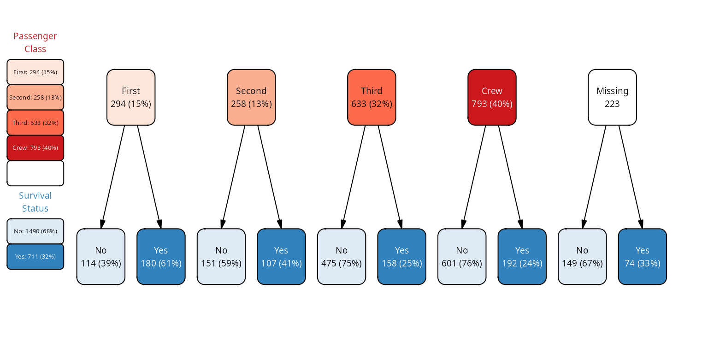
The special NAs name is used for all missing values,
regardless of the variable.
Unnecessary gory details:
-
add_aliases()andadd_labels()always ensure that columnscol_aliasandval_aliasare present in the vtree object. - If no custom format is specified, these two columns will be
identical to the
node_colandnode_valcolumns, respectively. - In addition, the alias information is stored in the
aliasattribute of the vtree object, which is subsequently used byplot()to create the legend.
Adding and modifying labels
Labels to be plotted are taken from the label column of
the vtree object. If this column is missing, plot() calls
add_labels() to add default labels. For custom labels there
are three routes:
- directly add a label column to the vtree object with
mutate() - use
add_labels()with a custom format - first use
add_labels(), then modify the label column withmutate()
Directly creating a label column with mutate()
Since the mutate() function is called in the context of
the vtree node data frame, you can use any of the columns of the vtree
object directly. For example, you can show the node_key
column, a unique identifier for each node.
vtree(titanicNA, Class, Survived) |>
mutate(label = paste0("node_key:\n", node_key)) |>
plot(legend_tiny = FALSE)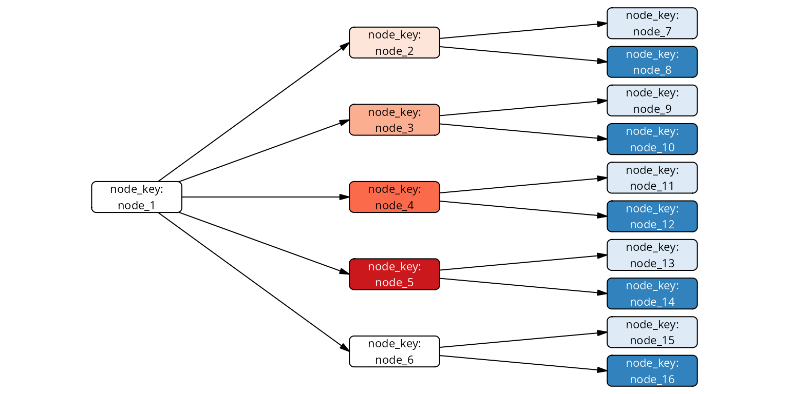
Using add_labels() to add default or custom labels
The add_labels() function can produce two types of
default labels: “simple” and “long”, chosen through the
template argument:
vt <- vtree(titanicNA, Class)
p1 <- add_labels(vt) |> plot() # template = "simple"
p2 <- add_labels(vt, template = "long") |> plot()
plot_grid(p1, p2, nrow = 1)These labels are derived directly from columns of the vtree object:
node_col, node_val, freq and
n.
Using custom formatting
Formatting can also be done with the
fmt/fmt_na parameters, which are R
expressions. You can use sprintf, glue, paste or whichever expressions
you like to construct a label from the following variables:
-
freq, the frequency for a node -
n, number of samples of a node -
node_col, name of the variable associated with a node -
node_val, value of the variable associated with a node -
col_alias,val_alias: if you have defined aliases withadd_aliases(), you will find them here. Otherwise the columns are same asnode_colandnode_val. - plus whatever new columns you have added to the vtree with mutate().
You can list the columns in the node data frame of a vtree object
with nodecols(vt) (or simply
colnames(as_tibble(vt))).
If provided, fmt_na is used to format the NA nodes.
Here is simple example using glue():
library(glue)
vt <- vtree(titanicNA, Class, Sex) |>
add_labels(fmt =
glue("{node_col}: {node_val}\nfreq={format(freq, digits=2)}"),
fmt_na =
glue("{node_col}: Missing\nfreq={format(freq, digits=2)}"))
plot(vt, legend_tiny = FALSE)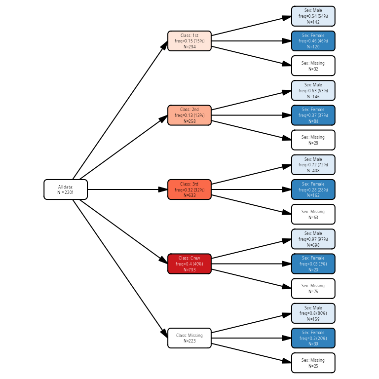
Note that the root node also got a label, but since
node_col and node_val are both “” for the
root, the label is not very informative. We can change it:
library(glue)
vt <- vtree(titanicNA, Class, Sex) |>
add_labels(fmt =
glue("{node_col}: {node_val}\nfreq={format(freq, digits=2)}\nn={n}"),
fmt_na =
glue("{node_col}: Missing\nfreq={format(freq, digits=2)}\nn={n}")) |>
mutate(label = ifelse(path == "root",
glue("All passengers\nn={n}"),
label))
plot(vt, legend_tiny = FALSE, dir="tb")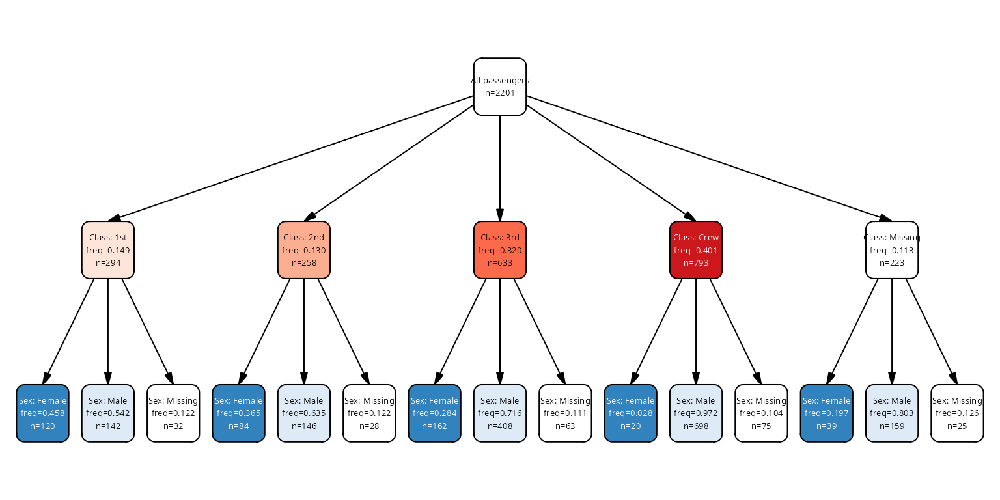
Using a mask
You can specify a mask with add_labels() - a logical
vector with the same length as the number of nodes - to indicate which
nodes should have their labels modified. For example, you may want a
different information for the leaf nodes as for other nodes:
vt <- vtree_from_freqtable(Titanic, Class, Sex, Survived) |>
retain(path == "Class:1st") # only keep the first class passengers
mask <- find_nodes(vt, leaf) # leaf is a logical vector
add_labels(vt, mask = mask, template = "long") |>
add_labels(mask = !mask, fmt = glue("{node_val}")) |>
plot(legend_tiny = FALSE, dir="tb", show_root = FALSE,
lwidth = 0.5, lheight = 0.5)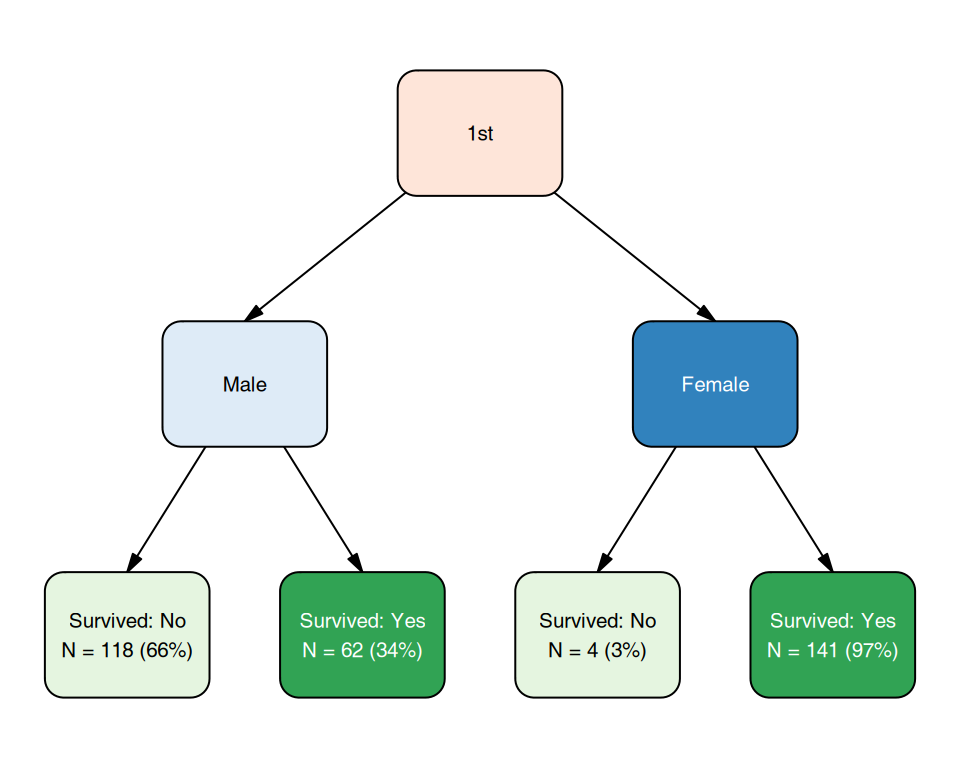
Plotting
Objects of type vtree can be directly plotted with the
plot() method. If the labels, colors and layouts are
missing, then plot adds some automatic defaults by running
vtree |> add_labels() |> add_colors() |> add_layout()
before plotting. Some of the arguments for these functions can be passed
directly to the plot() function.
Layouts
Currently, there are three layouts implemented: “regular”, “flushed_left”, “flushed_right” and “proportional”. The default layout is “regular”, which simply shows the tree structure with all nodes having the same sizes. The “flushed_*” layouts are similar, but the nodes are always flushed to one side of the plot.
The proportional layout shows the nodes with sizes proportional to the number of observations in that node.
# the default column name for .freq_col is "Freq", same as in Titanic,
# so no need to specify it here
vt <- vtree_from_freqtable(Titanic, Class, Sex, Survived)
p1 <- plot(vt) # layout regular
p2 <- plot(vt, layout = "proportional")
p3 <- plot(vt, layout = "flushed_left", dir="tb")
p4 <- plot(vt, layout = "flushed_right", dir="tb")
plot_grid(p1, p2, p3, p4, nrow = 2)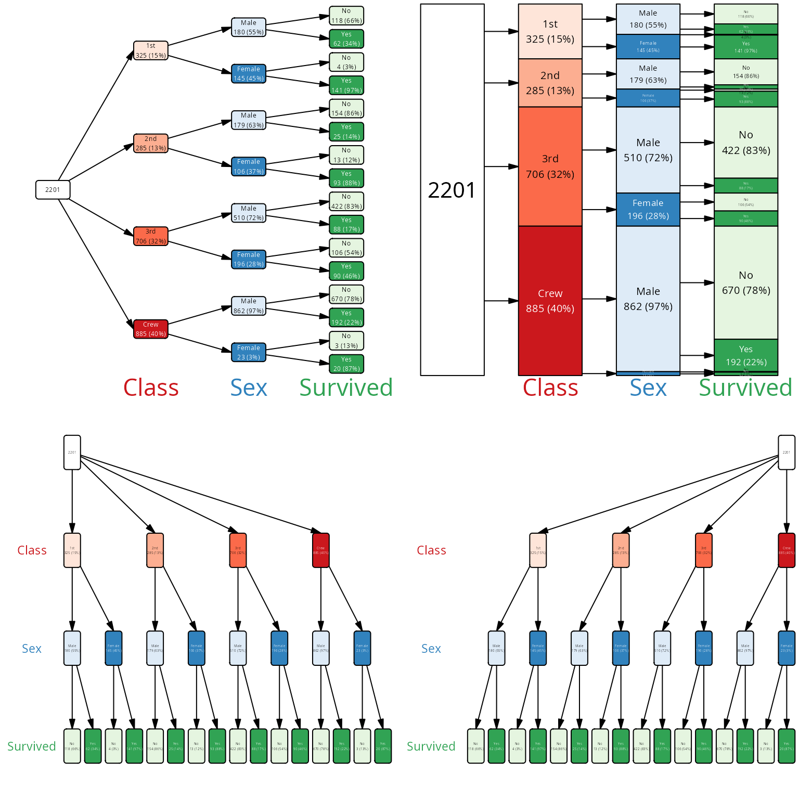
Layouts are added with the add_layout() function, which
you can call directly on the vtree object, resulting in a new vtree
object with additional columns for the layout.
With the layout_func argument, you can specify a custom
function to calculate the layout yourself. For example, this function
might call add_layout() first and then adjust the
calculated positions of the nodes in some way. See the documentation for
add_layout() for details.
Colors, fill colors and labels
Colors can be added with the add_palette() function and
then modified by directly manipulating the vtree object with
mutate(). Each node can have the fill and
color columns, corresponding to the fill color of the node
and the text color of the node label.
If fill is missing from the vtree object,
plot() will call add_palette() to assign fill
colors automatically. If color is missing, but
fill is present, then white or black will be chosen
automatically depending on the contrast with the fill color.
pal <- colorRampPalette(c("white", "steelblue"))(101)
p1 <- vt |>
mutate(fill = pal[round(freq * 100) + 1]) |>
plot()
#> ℹ palette attribute is NULL
#> legend will be black and white
p2 <- vt |>
mutate(abs_freq = n / max(n)) |>
mutate(fill = pal[round(abs_freq * 100) + 1]) |>
plot()
#> ℹ palette attribute is NULL
#> legend will be black and white
cowplot::plot_grid(p1, p2)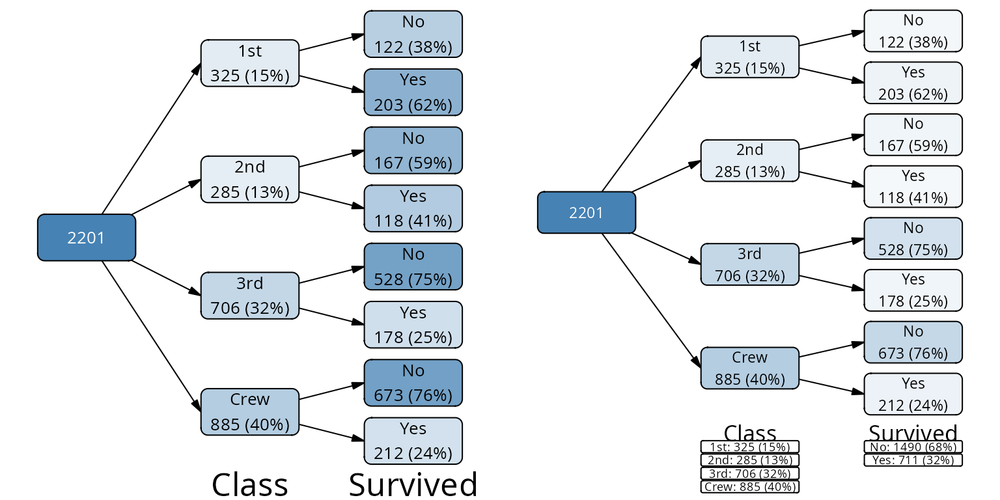
Colors can be also assigned automatically based on names of
RColorBrewer palettes. There is a default order of palettes for the
variables, but you can override it with the palettes
argument of plot() or add_palette().
Similarly, if the label column is missing from the vtree
object, plot() will call add_labels() (see
above) to assign labels automatically.
Legends with summaries
The legend shows a summary for each variable underneath or next to
the part of the tree which corresponds to this variable. Variable
summaries are calculated when vtree is constructed and stored in the
summary attribute of the vtree object. You can print them
with summary(vtree_object):
vt <- vtree_from_freqtable(Titanic, Class, Sex, Survived)
summary(vt)
#> # A tibble: 11 × 6
#> node_col node_val count freq denom label
#> <chr> <chr> <int> <dbl> <int> <chr>
#> 1 Class 1st 325 0.148 2201 1st: 325 (15%)
#> 2 Class 2nd 285 0.129 2201 2nd: 285 (13%)
#> 3 Class 3rd 706 0.321 2201 3rd: 706 (32%)
#> 4 Class Crew 885 0.402 2201 Crew: 885 (40%)
#> 5 Class NA 0 0 2201 Missing: 0
#> 6 Sex Male 1731 0.786 2201 Male: 1731 (79%)
#> 7 Sex Female 470 0.214 2201 Female: 470 (21%)
#> 8 Sex NA 0 0 2201 Missing: 0
#> 9 Survived No 1490 0.677 2201 No: 1490 (68%)
#> 10 Survived Yes 711 0.323 2201 Yes: 711 (32%)
#> 11 Survived NA 0 0 2201 Missing: 0The summaries will not change if you prune the tree, since they are tied to the data and not the tree structure:
mar <- c(0.05, 0.05, 0.33, 0.05)
p1 <- plot(vt, legend = TRUE, lwidth=.8, margins = mar)
p2 <- retain(vt, path == "Class:1st") |>
plot(legend = TRUE, lwidth=.8, margins = mar)
plot_grid(p1, p2, nrow = 1)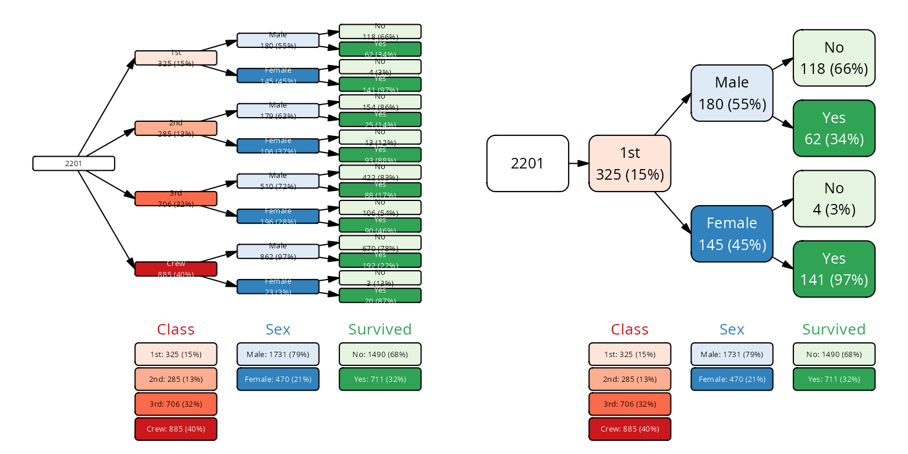
Other plot() arguments
lwidth, lheight - label
width and height relative to available space. The layout functions
calculate the available space for each node, and then these parameters
determine how much of that space is used for the label.
For the proportional layout, lheight is ignored, since
the height of the node is determined by the number of observations in
that node.
margins - a numeric vector of length 4,
specifying the top, right, bottom and left margins as fractions of the
total device space. So, for example, for 10% margins on all sides, use
margins = c(0.1, 0.1, 0.1, 0.1).
show_root - if TRUE (default), show the
root node (total population).
legend_tiny - if FALSE, not even
minimal variable legend is shown on the plot. If TRUE (default), the
variable (column) names are shown on the margin.
vt <- vtree_from_freqtable(Titanic, Class, Sex, Survived)
plot(vt, legend_tiny = FALSE)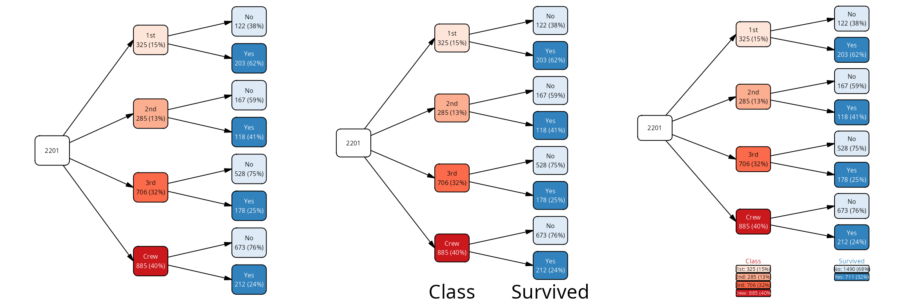
dir direction of the tree. One of “lr”
(left to right), “rl” (right to left), “tb” (top to bottom), “bt”
(bottom to top). Default is “lr”.
p1 <- plot(vt) # same as dir = "lr"
p2 <- plot(vt, dir = "tb")
p3 <- plot(vt, dir = "bt")
p4 <- plot(vt, dir = "rl")
plot_grid(p1, p2, p3, p4, nrow = 1)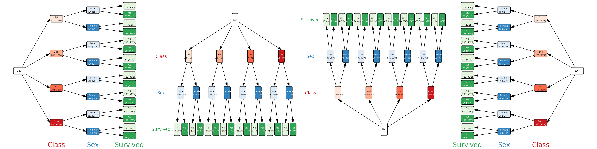
fontsizes Font sizes for the various
labels are automatically fit to the available space, but sometimes you
might manually adjust them. The fontsizes is a named list
with the following optional fields: * nodes: node labels
(default: “fixed” for regular layout, “adaptive” for proportional
layout) * var_labels: variable labels (default: “fixed”) *
legend_labels: for variable levels when
legend=TRUE (default: “fixed”)
Each element can be either a number, in which case the given font size is directly used, or either “fixed” or “adaptive”. When “fixed” is used, then optimal font size is calculated for all objects within the group, and then the minimal font size is used for all objects. When “adaptive” is used, then each object is fit separately, and the font sizes can be different for each object.
lwd line width for use with plotting.
Unfortunately, the default line width is not relative to the device
size, but is fixed to an absolute value; therefore, for small devices
the lines may appeary too thick.
Rich text labels
It is possible to use simple HTML or markdown formatting in the
labels and then use richtext=TRUE in the
plot() function to render the labels with the formatting.
The plot rendering is noticably slower, but it allows for more
flexibility in the label formatting.
vt <- vtree_from_freqtable(Titanic, Class, Survived) |>
add_labels() |>
mark(path == "Class:1st/Survived:No") |>
mutate(label = ifelse(mark, paste0('**', label, '**'), label)) |>
mark(path == "Class:2nd/Survived:No") |>
mutate(label = ifelse(mark,
paste0('<span style="color:red">', label, '</span>'),
label))
plot(vt, richtext = TRUE, legend = TRUE)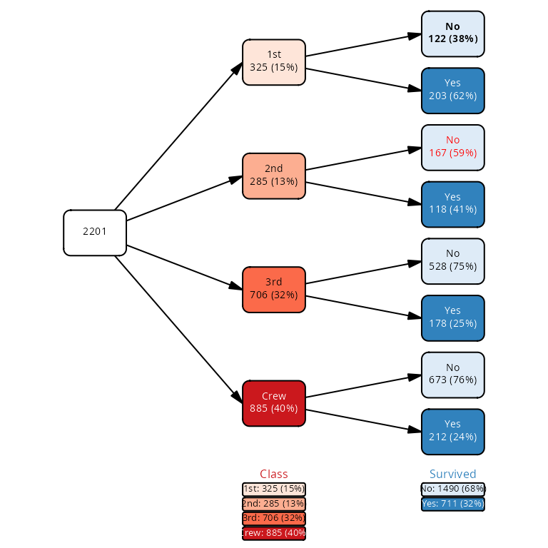
You can also include the rich text formatting in the aliases for the variable names and values, which will then be used both in the labels and in the legend.
vt <- vtree_from_freqtable(Titanic, Class, Sex, Survived)
# we can use aliases through add_labels() to change the formatting of the
# variable names and values
cols <- list(Class = "**Class**", Sex = "**Sex**",
Age = "**Age**", Survived = "**Lived**")
vals <- list(Class = c("1st" = "1<sup>st</sup>", "2nd" = "2<sup>nd</sup>",
"3rd" = "3<sup>rd</sup>"),
Sex = c("Male" = "**<span style='color:blue'>Male</span>**",
"Female" = "**<span style='color:lightblue'>Female</span>**"))
vt <- add_aliases(vt, col_alias = cols, val_alias = vals)
plot(vt, richtext = TRUE, legend = TRUE)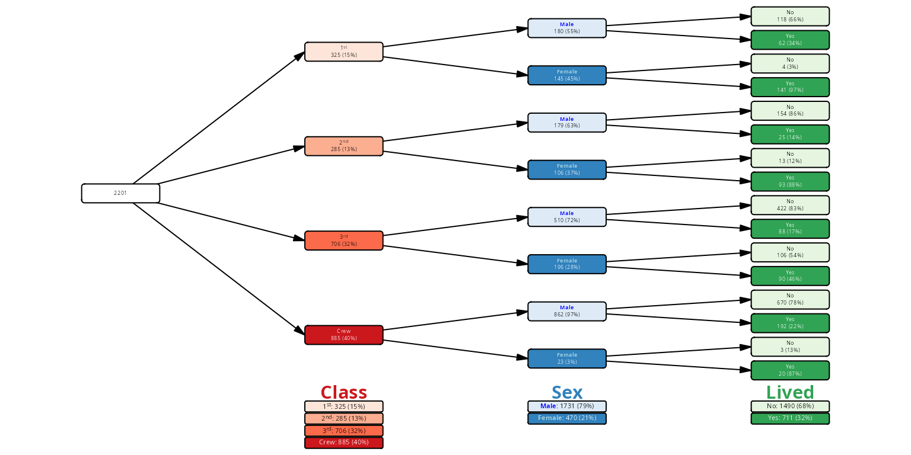
Inset plots
It is possible to add any kind of “grob” - graphical object - to the
nodes description. This includes not only bitmap images, but also
ggplot2 plots, which can be easily converted to a grob with
the function ggplot2::ggplotGrob().
The important thing to remember is that the inset graphics (1) must be a grob and (2) must be stored in a list-column of the vtree object called “grob”.
In the following example, we will download three images from Wikipedia corresponding to the three species of iris flowers from the famous Fisher data set. We will show on the vtree how many of each of the species have long petals, and we will illustrate the Species nodes with the corresponding images.
library(dplyr)
library(purrr)
iris_urls <- list(
versicolor="https://upload.wikimedia.org/wikipedia/commons/thumb/2/27/Blue_Flag%2C_Ottawa.jpg/500px-Blue_Flag%2C_Ottawa.jpg",
setosa="https://upload.wikimedia.org/wikipedia/commons/thumb/a/a7/Irissetosa1.jpg/500px-Irissetosa1.jpg",
virginica="https://upload.wikimedia.org/wikipedia/commons/thumb/f/f8/Iris_virginica_2.jpg/500px-Iris_virginica_2.jpg")
get_grob <- function(url) {
tf <- tempfile(fileext = ".jpg")
download.file(url, tf, mode="wb")
img <- jpeg::readJPEG(tf)
grid::rasterGrob(img)
}
iris_grobs <- lapply(iris_urls, get_grob)
vt <- iris |>
mutate(Long_Petals = as.character(Petal.Length > 4)) |>
vtree(Species, Long_Petals) |>
add_labels() |>
mutate(label = ifelse(leaf, label, paste0("Iris\n", node_val)))
vt <- vt |>
mutate(grob = map(pull(vt, "node_val"), ~ iris_grobs[[.x]]))
layout <- vt |>
add_palette(palettes = c("Greens", "Blues")) |>
add_layout(dir="tb", show_root=FALSE, lwidth=.9, lheight=.8,
varspace=c(Species=4,Long_Petals=1))
layout |>
plot(margins=c(.05, .05, .05, .2))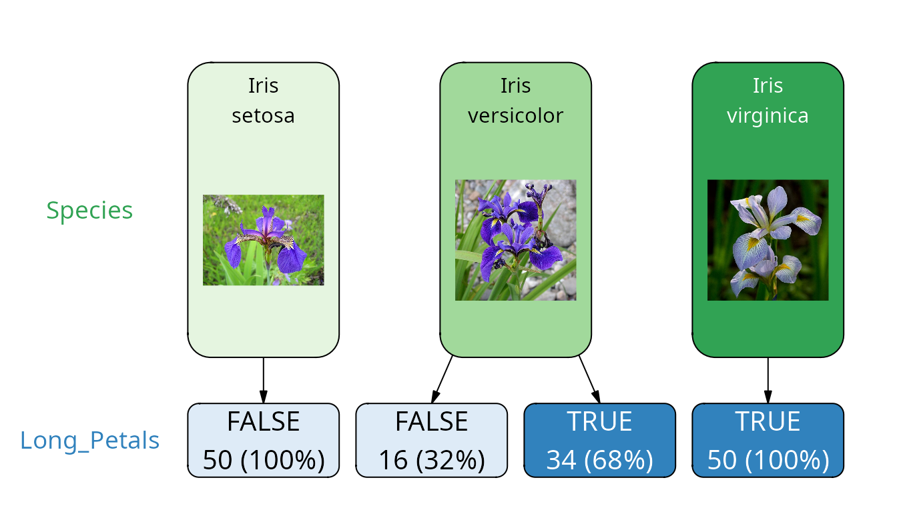
Here, we choose only the “Sex” and “Survived” nodes for the construction of the vtree. However, we make a ggplot object for each of the leaf nodes (“Survived:Yes” and “Survived:No”) and insert the resulting graphics object into the node.
For this, we create the grob column and convert the
ggplot2 to a grob with ggplot2::ggplotGrob(). The
grob column is a list-column, so we need to manipulate it
carefully. Also, we need to set an NA value for the non-leaf nodes.
# first, a tree with simplified labels on the leaf nodes
cases <- cases_from_freqtable(Titanic)
vt <- vtree(cases, Sex, Survived)
library(ggplot2)
# minimalistic ggplot showing how many passengers were in each class
# of the data frame df.
clasplot <- function(df) {
ggplot(df, aes(x = Class, fill = Class)) +
geom_bar() +
scale_fill_discrete(drop=FALSE) +
scale_x_discrete(drop=FALSE) +
ylim(0, max(table(cases$Class))) +
theme_minimal() +
# remove labels, legend and axes
theme(legend.position = "none",
axis.title = element_blank(),
axis.ticks = element_blank())
}
# use vtree_apply to produce plots
plots <- vtree_apply(cases, vt, FUN = clasplot)
grobs <- lapply(plots, ggplot2::ggplotGrob)
grobs[!pull(vt, leaf)] <- NA # plots only for the leaf nodes
# we add layout manually, so we can control it better
# this varspace arg means: reserve 4x as much space for the Survived nodes
# as for the Sex nodes
vt <- vt |>
add_layout(dir="tb", show_root=FALSE, lheight=.8,
varspace=c(Sex=1,Survived=3)) |>
mutate(shape = ifelse(leaf, "rectangle", "roundrectangle")) |>
mutate(grob = grobs)
plot(vt)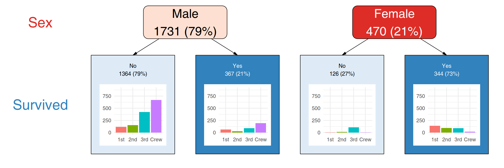
There is one issue with such plots: unlike vtree2,
ggplot2 does not fit font sizes automatically to the
available space. If your image is too small, bad things will happen:
plot(vt)